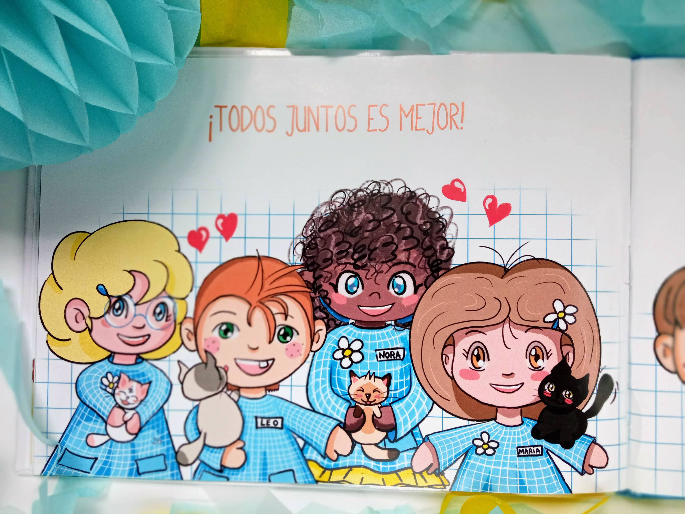

El cuento de La Caja de los Gatitos, ha sido mi primer gran proyecto como ilustradora y creativa..
Ha sido una experiencia muy enriquecedora poder crear de la nada un cuento que ideé en la pandemia del COVID.
¿Quieres saber de qué va el cuento infantil y que está basado además en un hecho real?.